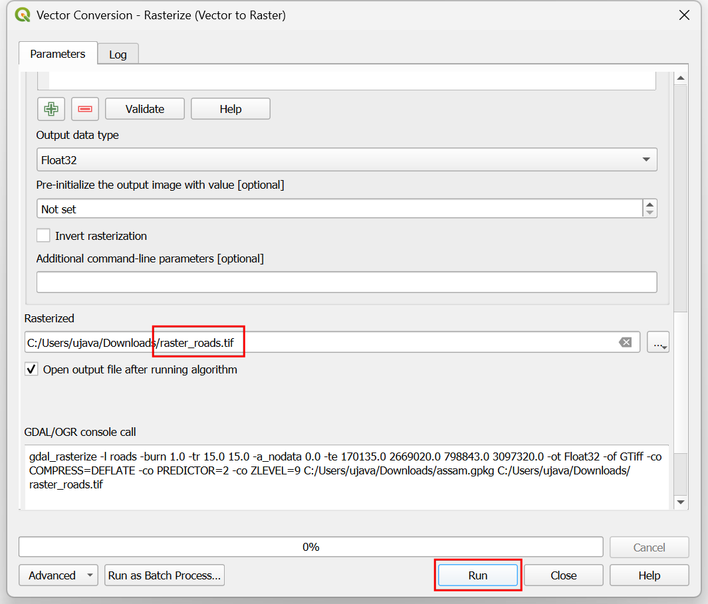
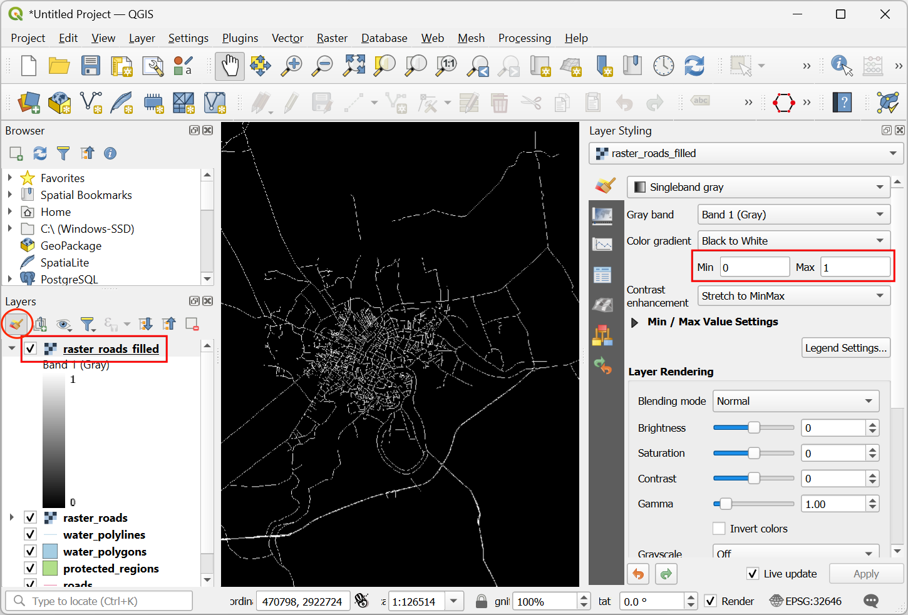
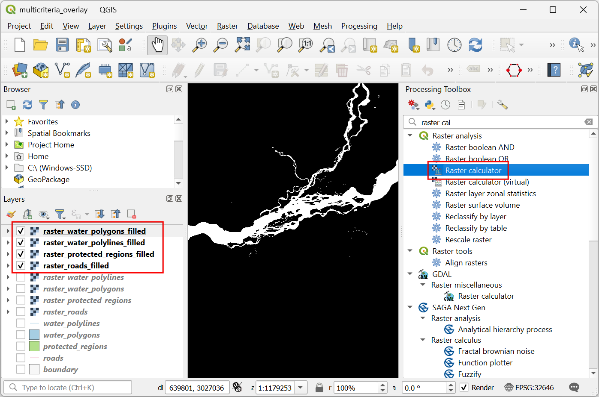
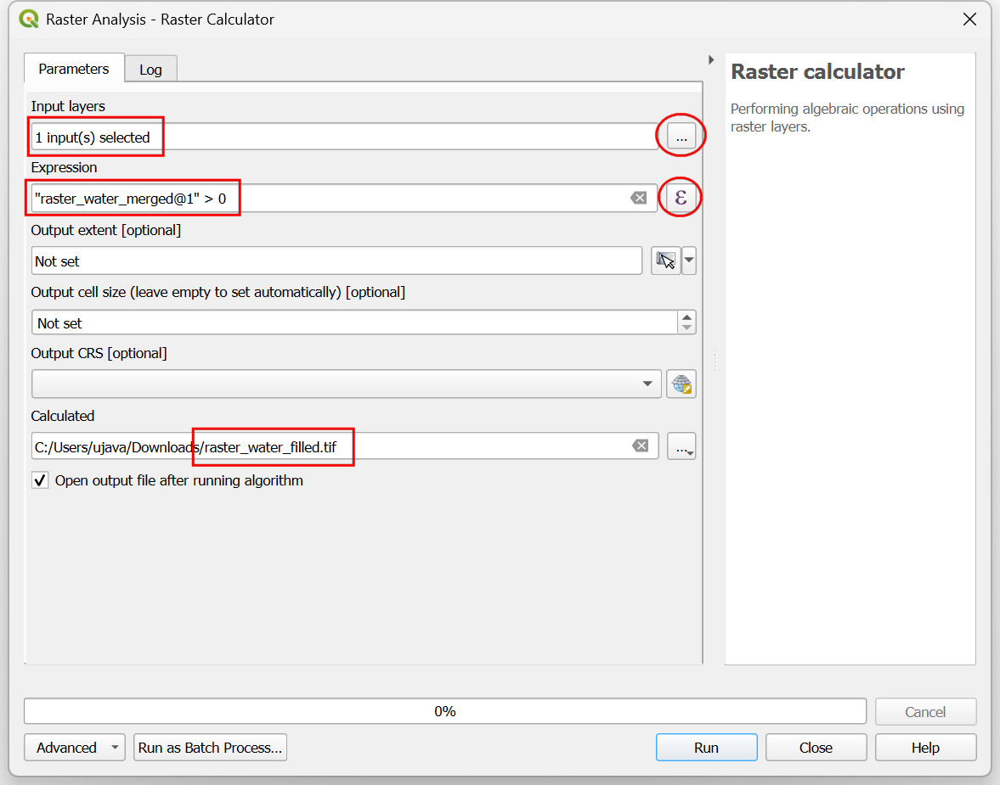

Ujaval Gandhi
Ujaval GandhiMulti Criteria Overlay Analysis (QGIS3)¶
Multi-criteria weighted-overlay analysis is the process of the allocating areas on the basis of a variety of attributes that the selected areas should possess. Although this is a common GIS operation, it is best performed in the raster space using a grid-based approach.
참고
Vector vs Raster Overlays
You can do the overlay analysis on vector layers using geoprocessing tools such as buffer, dissolve, difference and intersection. This method is ideal if you wanted to find a binary suitable/non-suitable answer and you are working with a handful of layers. You can review our video tutorial on Locating A New Bicycle Parking Station using Multicriteria Overlay Analysis for a step-by-step guide on this approach.
Working in the raster space gives you a ranking of the suitability - not just the best suited site. It also allows you to combine any number of input layers easily and assign different weights to each criteria. In general, this is the preferred approach for site suitability.
This tutorial goes through the typical workflow for performing a site-suitability analysis - converting source vector data to appropriate rasters, re-classify them and perform mathematical operations.
Overview of the task¶
In this tutorial, we will identify the suitable areas for development, that are
Close to roads, and
Away from water bodies, and
Not in a protected region.

Get the data¶
We will use vector data layers from OpenStreetMap (OSM). OSM is a global database of freely available base map data. Geofabrik provides daily updated shapefiles of OpenStreetMap datasets.
We will be using the OSM data layers for the state of Assam in India. Geofabrik India shapefiles were downloaded, reprojected to a UTM projection, clipped to the state boundary and packaged in a single GeoPackage file. You can download a copy of the geopackage from the link below:
Data Source: [GEOFABRIK]
Procedure¶
Browse to the downloaded
assam.gpkgfile in QGIS Browser. Expand it and drag each of the 5 individual data layers to the map canvas. You will seeboundary,roads,protected_regions,water_polygonsandwater_polylineslayers loaded in the Layers panel.

First step in the overlay analysis, is to convert each data layer to raster. An important consideration is that all rasters must be of the same extent. We will use the
boundarylayer as the extent for all the rasters. Go to . Search for and locate the algorithm. Double-click to launch it.

In the Vector Conversion - Rasterize (vector to raster) dialog, select
roadsas the Input layer. We want to create an output raster where pixel values are 1 where there is a road and 0 where there are no roads. Enter1as the A fixed value to burn. The input layers are in a projected CRS with meters are the unit. SelectGeoferenced unitsas the Output raster size units. We will set the resolution of the output raster to be 15 meters. Select15as both Width/Horizontal resolution and Height/Vertical resolution. Next, click the arrow next to Output extent and select .

Scroll down to find the Advanced Parameters and select the profile
High Compressionto apply the compression. This will generate the compressed raster file of smaller size after running the tool. Applying lossless compression is highly recommended while working with raster data.

Set the Rasterized output raster as
raster_roads.tifand click Run.

Once the processing finishes, you will see a new layer raster_roads loaded in the Layers panel. The raster has pixel values 1 for pixels which intersected with the roads. All other pixels are set as NoData values. These nodata values are problematic because when raster calculator (which we will use later) encounters a pixel with nodata value in any layer, it sets the output value of that pixel to nodata as well, resulting is unexpected output. We will fill these nodata values with the value 0. Search for and locate the algorithm. Double-click to launch it.

Select
raster_roadsas the Raster input and choose0as the Fill value. Scroll down to find the Advanced Parameters and select the profileHigh Compressionto apply the compression. Set the Output raster asraster_roads_filled.tifand click Run.

Once the processing finishes, you will see the new layer
raster_roads_filledloaded in the Layers panel. This raster has values 1 for roads and 0 for no roads. If the layer is not visualized correctly, you can click the Open the Layer Styling Panel and set the Min to0and Max to1.

Repeat steps 3-8 for the other 3 vector layers
protected_regions,water_polylinesandwater_polygonslayers. You need to rasterize and fill the nodata cells for these layers. If you want to run these steps manually, you can configure the processing algorithm dialog, run the algorithm and once the algorithm finishes, switch to the Parameters tab and just change the input and output layer names. You can also run each algorithm on all 4 layers in a single step using Batch Processing. See the 프로세싱 프레임을 이용한 일괄처리과정 tutorial to learn more. Once you are done, you should have 4 raster layers and generate the corresponding raster layersraster_roads_filled,raster_protected_regions_filled,raster_water_polylines_filledandraster_water_polygons_filled. You will notice that we have 2 water related layers - both representing water. We can merge them to have a single layer representing water areas in the region. Search for and locate algorithm in the Processing Toolbox. Double-click to launch it.

Select
raster_water_polygonsandraster_water_polylineslayers using … button as Input Layers. Enter the following expression using ε button. Keep all the other options as default and save the output layer with the nameraster_water_merged.tifand click Run.
"raster_water_polygons_filled@1" + "raster_water_polylines_filled@1"
The resulting merged raster will have pixels with value 1 for all areas with water. But you will notice that there are some regions where there was both a water polygon and a water polyline. Those areas will have pixels with value 2 - which is not correct. We can fix it with a simple expression. Open algorithm again.

Select
raster_water_mergedlayer using … button as an Input Layer. Enter the following expression using ε button. Keep all the other options as default and save the output layer with the nameraster_water_filled.tifand click Run.
"raster_water_merged@1" > 0
The resulting layer
raster_water_fillednow has pixels with only 0 and 1 values.

Now that we have layers representing road and water pixels, we can generate proximity rasters. These are also known as Euclidean distances - where each pixel in the output raster represents the distance to the nearest pixel in the input raster. This resulting raster can be then used to determine suitable areas which are within certain distance from the input. Search for and locate the algorithm. Double-click to launch it.

In the Raster Analysis - Proximity (Raster Distance) dialog, select
raster_roads_filledas the Input layer. ChooseGeoreferenced coordinatesas the Distance units. As the input layers are in a projected CRS with meters as the units, enter5000(5 kilometers) as the Maximum distance to be generated. For all pixels that are more than the maximum distance away - we will set their values to be 5000 as well. So set the Nodata value to use for the destination proximity raster value to5000.

You can expand the Advanced Parameters and select the profile
High Compressionto apply the compression. Name the output file asroads_proximity.tifand click Run.

참고
It may take upto 15 minutes for this process to run. It is a computationally intensive algorithm that needs to compute distance for each pixel of the input raster.
Once the processing is over, a new layer
roads_proximitywill be added to the Layers panel. To visualize it better, let’s change the default styling. Click the Open the Layer Styling panel button in the Layers panel. Change the Max value to5000under Color gradient.

Repeat the Proximity (Raster Distance) algorithm for the
raster_water_filledlayer with same parameters and name the outputwater_proximity.tif. If you click around the resulting raster, you will see that it is a continuum of values from 0 to 5000. To use this raster in overlay analysis ,we must first re-classify it to create discrete values. Open algorithm again.

We want to give higher score to pixels that are near to roads. So let’s use the following scheme.
0-1000m –> 100
1000-2000m –> 50
>2000m –> 10
Select
roads_proximitylayer using … button as an Input Layer. Enter the following expression that applies the above criteria on the input. Keep all the other options as default and save the output layer with the nameroads_reclass.tifand click Run.100*("roads_proximity@1"<=1000) + 50*("roads_proximity@1">1000)*("roads_proximity@1"<=2000) + 10*("roads_proximity@1">2000)
Once the re-classification process finishes, a new layer
roads_reclasswill be added to the Layers panel. This layer has only 3 different values, 10, 50 and 100 indicating relative suitability of the pixels with regards to distance from roads. Open algorithm again.
Repeat the re-classification process for the
water_proximitylayer. Here the scheme will be reverse, where pixels that are further away from water shall have higher score.
0-1000m –> 10
1000 -2000m —> 50
>2000m –> 100
Select
water_proximitylayer using … button as an Input Layer. Enter the following expression hat applies the above criteria on the input. Keep all the other options as default and save the output layer with the namewater_reclass.tifand click Run.100*("water_proximity@1">2000) + 50*("water_proximity@1">1000)*("water_proximity@1"<=2000) + 10*("water_proximity@1"<1000)
Now we are ready to do the final overlay analysis. Recall that our criteria for determining suitability is as follows - close to roads, away from water and not in a protected region. Open . Select
roads_reclass,water_reclass,raster_protected_regions_filledlayers using … button as Input Layers. Use ε button to enter the following expression that applies these criteria. Keep other parameters as default. Name the outputoverlay.tifand click Run.
(("roads_reclass@1" + "water_reclass@1")/2) *("raster_protected_regions_filled@1" != 1 )
참고
In this example, we are giving equal weight to both road and water proximity. In real-life scenario, you may have multiple criteria with different importance. You can simulate that by multiplying the rasters with appropriate weights in the above expression. For example, if proximity to roads is twice as importance as proximity away from water, instead of (("roads_reclass@1" + "water_reclass@1")/2), you can use the expression ((2*"roads_reclass@1" + "water_reclass@1")/3).
Once the processing finishes, the resulting raster
overlaywill be added to the Layers panel. The pixel values in this raster range from 0 to 100 - where 0 is the least suitable and 100 is the most suitable area for development. Let’s clip the results to the boundary layer. Open algorithm.

In the Raster Extraction - Clip Raster by Mask Layer dialog, select
overlayas the Input layer andboundaryas the Mask layer.

Scroll down to find the Advanced Parameters and select the profile
High Compressionto apply the compression. Save the Clipped (mask) layer asoverlay_clipped.tifand click Run.

Once the processing finishes, the final output layer
overlay_clippedwill be added to the Layers panel. Click the Open the Layer Styling panel button in the Layers panel and select theSingleband pseudocolorrenderer.

Set the Interpolation to
Discreteand choose theSpectralcolor ramp.

Click on the default label values next to each color and enter appropriate labels.

The labels will also appear as the legend under the
overlay_clippedlayer. This is our final map showing the site suitability according to the chosen criteria.

If you want to give feedback or share your experience with this tutorial, please comment below. (requires GitHub account)